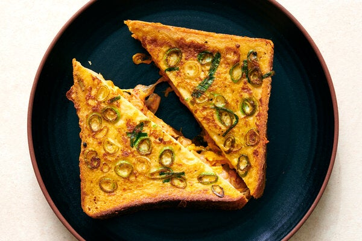

Description
When French toast meets kimchi grilled cheese, we arrive at a surprising and joyous union. While any bread can be used here, choosing a soft, plump variety like brioche or milk bread will ensure that the center of the sandwich becomes super custardy. The trickiest part of this recipe is getting the cheese to melt before the toast gets too golden; American cheese melts faster, but other firm cheeses like Cheddar or Monterey Jack work, too. Combining grated cheese with the kimchi encourages faster, even melting, while cooking on low heat and covering with a lid slows browning. If you do find that the outside of your toast is getting too dark before your cheese has melted, simply place the sandwich in a 300-degree oven. (You can also do this to keep your sandwich warm if you are making more than one.)
Ingredients
- 1 large egg
- ½ teaspoon soy sauce or ¼ teaspoon kosher salt (such as Diamond Crystal)
- 1 scallion, thinly sliced
- Black pepper
- ⅓ cup roughly chopped drained vegan or regular kimchi (about 2½ ounces)
- ¼ cup (1 ounce) grated American cheese or Cheddar (about 1 slice)
- 2 slices soft white bread, preferably brioche or sourdough
- ½ tablespoon unsalted butter
Steps
- In a medium shallow bowl, add the egg and soy sauce and whisk together until completely smooth. Add the scallions and a few turns of black pepper and whisk to combine.
- In a small bowl, combine the kimchi and grated cheese. (If you are using sliced cheese, tear it up.)
- Place the two slices of bread on a cutting board and top one with the kimchi and cheese mixture. Place the other slice of bread on top to create a sandwich
- Dip one side of the sandwich into the egg mixture and leave for 30 seconds. Carefully flip the sandwich over (making sure the filling doesn’t fall out) and soak the other side in the remaining egg mixture, leaving it while you prepare your skillet.
- Heat a medium nonstick skillet on medium for 1 to 2 minutes until it is hot. Add the butter and swirl to melt. Place the eggy sandwich into the pan, cover with a lid and cook for 2 minutes until it is golden. Flip the sandwich over to cook the other side, covering with a lid and leaving for 2 to 3 minutes, until the bread is golden and the cheese is melted.
- Slice in half and eat while warm.